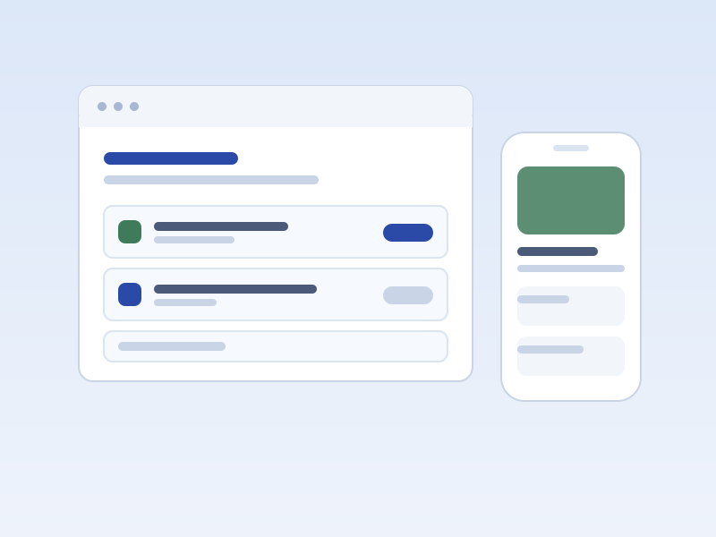
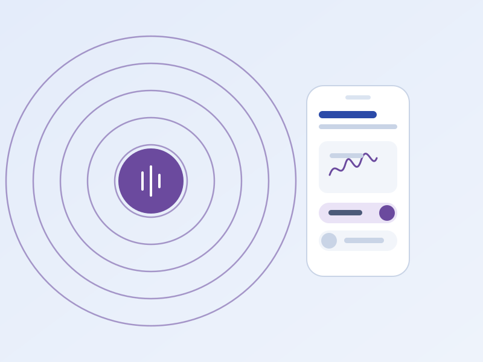
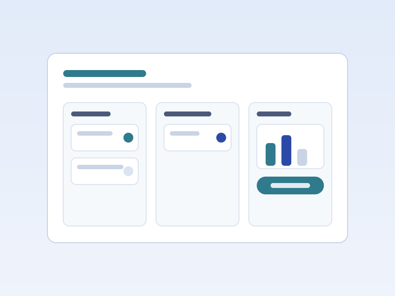
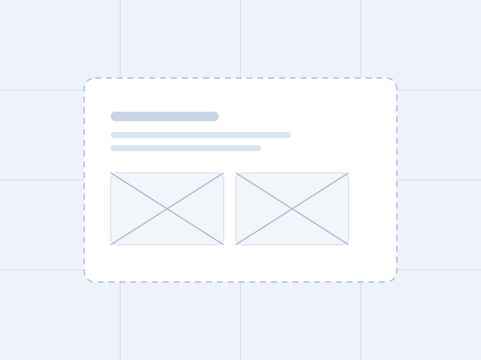

Eren Nova Kim
Product designer driven by research, with a background in development.
Selected Works
PeterPlate
UI/UX Designer

January 2026 - Present
A 0-to-1 web and mobile experience for campus dining, shaped by interviews and usability testing and handed to developers as specs I could have built myself.
- Journey mapping
- User interviews
- Usability testing
- Figma handoff
Ēkyu
UI/UX Designer

April 2026
A hardware and software system that lets someone choose what they hear, designed in a 40-hour sprint and placed top 10 out of more than 400 participants.
- Inclusive design
- Brand identity
- Gesture design
- Case study writing
Cosi
UI/UX Designer

January 2026 - March 2026
An app for household dynamics that pairs conflict-neutral communication flows with task management, built on research into how housemates actually negotiate chores.
- User research
- Personas
- Design systems
- Prototyping
Fourth project
UI/UX Designer

Case study in progressTo be added
A placeholder for the fourth selected work. Replace the frontmatter and sections below with the real project and it will appear everywhere on the site automatically.
- Placeholder
About
I started out building products and moved toward the people using them. On PeterPlate I spent my first months as a software developer, writing the frontend and backend in TypeScript, tRPC and ShadCN, before taking the designer seat on the same team. Knowing what a decision costs to build changed how I make them.
Research is the part of design that keeps you honest.
Every project here began with people rather than a brief. I run interviews and usability tests, map the journey, and keep revising until the design answers a friction point someone actually described to me. For Ēkyu that meant designing alongside a hearing-impaired collaborator. For Cosi it meant learning how housemates really negotiate chores before proposing a single screen.
I also teach what I learn. As workshops coordinator at Design at UCI, I research and run sessions on design thinking, accessibility and Figma for new and experienced designers, including at hackathons and external events.
University of California, Irvine
B.S. Informatics, minor in Information & Computer Science. Expected June 2027.
- Regents Scholarship
- Dean’s Honor List
- Invited to the Campuswide Honors Collegium
Resume
Education
-
B.S. Informatics, minor in Information & Computer Science
Expected June 2027University of California, Irvine
- Regents Scholarship, Dean’s Honor List, and an invitation to the Campuswide Honors Collegium.
Project Experience
-
UI/UX Designer
January 2026 — PresentPeterPlate, Information and Computer Science Student Council
- Apply design thinking and journey mapping to build a 0-to-1 web and mobile interface for a campus dining ecosystem.
- Conduct user interviews and usability testing to validate needs, then refine high-fidelity Figma prototypes with accessibility in mind.
- Work with developers in Agile and Scrum to produce design specs, prioritise deliverables, and keep Figma handoff technically feasible across touchpoints.
-
Software Developer
October 2025 — January 2026PeterPlate, Information and Computer Science Student Council
- Built frontend and backend components with TypeScript, Tailwind CSS, tRPC procedures and ShadCN, working with designers to meet design requirements and responsive UI standards.
-
UI/UX Designer
April 2026Ēkyu, UCI Design-a-thon
- Placed top 10 of more than 400 participants with an integrated hardware and software solution for selective noise cancellation, including a full case study written in a 40-hour sprint.
- Designed a mobile controller app and a physical gesture system, with custom icons and brand identity carrying across both.
- Interviewed a hearing-impaired collaborator and confirmed design choices with them to ground inclusive features in research.
-
UI/UX Designer
January 2026 — March 2026Cosi, Design at UCI
- Designed an app that improves household dynamics through conflict-neutral communication flows and task management that makes each person’s contribution visible.
- Ran user research to build personas and flows addressing friction points people described, then tested the proposed solutions.
- Built the branding and design system in Figma so high-fidelity prototypes stayed consistent.
Work Experience
-
Workshops Coordinator
April 2026 — PresentDesign at UCI
- Research, create and present workshops on design trends, design thinking methods and tools like Figma, for new and experienced designers.
- Host external workshops at hackathons and other events, using research insights to tailor the content to each audience.
-
Research Engagement & Compliance Assistant
July 2025 — PresentUCI Office of Research, Conflict of Interest Oversight Committee
- Manage compliance documentation by distributing required forms, running systematic follow-up communication, and joining team synchronisation meetings.
- Led a data cleanup across more than 2,000 records, improving database efficiency and consistency.
- Synthesise complex research information into short, actionable summaries and compile financial interest review packets for committee evaluation.
-
Student Union Organizer
May 2022 — June 2023Palisades Charter High School
- Led more than 50 club members organising fundraising and community service projects, and oversaw club finances.
- Acted as liaison between the student body and school administration to secure funding and keep activities aligned with school policy.
Technical tools
What I design and build in.
- Figma
- Framer
- Cursor
- Claude Code
- React
- TypeScript
- Python
- C++
- Java
- HTML
- CSS
- UnitTest
- GTest
Design and UX
How I get from a question to a tested interface.
- High-fidelity prototyping
- Wireframing
- UI design
- Inclusive and accessible design (WCAG)
- Branding and design systems
- Design thinking
- Journey mapping
- User interviews
- Usability testing
- Case study writing
- Persona development
- Information architecture
Working with people
Demonstrated across the roles listed above.
- Cross-functional collaboration
- Agile and Scrum delivery
- Developer handoff
- Workshop facilitation
- Public speaking
- Research synthesis
- Stakeholder communication
- Team leadership
Want the one-page version to pass along? Take the PDF.
Download resume